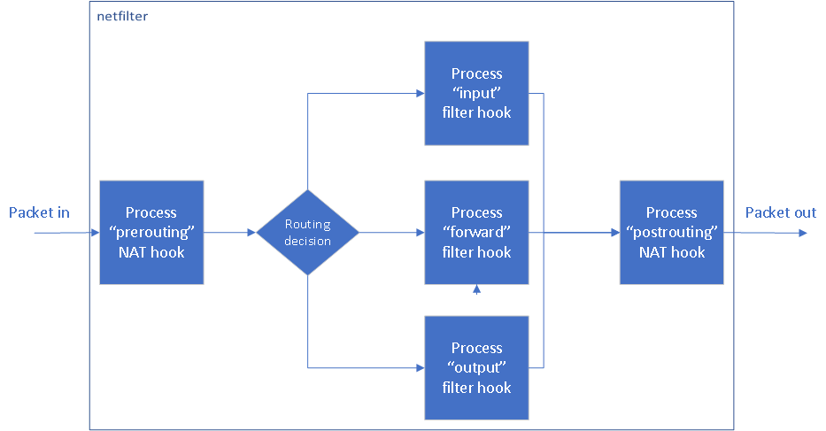

NetworkEnjin – Part 1: Routing with NFTables
To configure routing using NFTables we need to do the following:
- Enable packet forwarding
- Install, configure and enable NFTables
- Disable IPTables
The configuring NFTables part can get complex quickly (I have included a base config for you to start with) but the rest of very straight forward.
Enabling packet forwarding
By default Ubuntu (like most Linux distributions) doesn’t enable packet forwarding out of the box so you’ll need to…
Create /etc/sysctl.d/90-nwenjin.conf with the following contents
net.ipv4.ip_forward = 1
Kick-in the change
sysctl --system
You can test that it has applied using this command
sysctl net.ipv4.ip_forward
Replacing IPTables with NFTables
Install NFTables
apt install nftables
Populate /etc/nftables.conf with our base config. I’ll give some guidance for how to add to it later but for now make sure to populate the 2 variables with the right values and use this:
#!/usr/sbin/nft -f
flush ruleset
define WAN_INTERFACE = {:WANInterface:}
define LAN_SUBNET = {:LANSubnet:}
table inet filter {
chain outgoing {
type filter hook output priority 100
policy accept
}
chain incoming {
type filter hook input priority 0
policy drop
ct state established,related accept
iif lo accept
meta l4proto {icmp, icmpv6} accept
ip saddr $LAN_SUBNET tcp dport 22 accept
}
chain forwarding {
type filter hook forward priority 0
policy drop
ip saddr $LAN_SUBNET oifname $WAN_INTERFACE accept
iifname $WAN_INTERFACE ip daddr $LAN_SUBNET ct state related,established accept
}
}
table nat {
chain prerouting {
type nat hook prerouting priority 0
}
chain postrouting {
type nat hook postrouting priority 0
}
}
Enable and start NFTables
systemctl enable nftables.service
systemctl start nftables.service
Create /etc/modprobe.d/nwenjin.conf with the following contents
blacklist iptable_filter
blacklist ip_tables
Restart the machine for IPTables to be disabled and NFTables to be enabled.
Networking theory
Before you expand on the above base config to create yourself a simple firewall router, you’ll first need to understand some fundamentals of how our firewall will work.
In Linux, IPTables and NFTables sit on top of Netfilter which is the kernel’s networking hooks. It’s a bit over-simplified but Netfilter’s packet flow looks something like this:

Groups of hooks are referred to as tables. For the purpose of our router we have two tables. A filter table for accepting or dropping traffic and a NAT table which changes the source or destination of traffic as it moves in or out of the router.
Now you do not put rules directly into a hook, rules are grouped together in a chain and that chain is associated with a hook. If you like, a chain can have only 1 rule.
The filter table in our base config has three chains:
- Outgoing: Associated with the output hook to hold the rules for packets going from our router to another device. By default this chain will accept packets if another rule does not match.
- Incoming: Associated with the input hook to hold the rules for packets hitting our router from another device. By default this chain will drop packets if another rule does not match.
- Forwarding: Associated with the forward hook to hold the rules for packets being passed by our router from one device to another device. By default this chain will drop packets if another rule does not match.
The NAT table in our base config has two chains:
- Pre-routing: Associated with the prerouting hook to hold the rules for doing a network translation before they go through our filter table.
- Post-routing: Associated with the postrouting hook to hold the rules for doing a network translation after they have gone through our filter table.
It is important to note that you need rules for traffic to go in both directions. Just because you let traffic go one-way that does not guarantee that the response is allowed back the other way. As an example the base config has the following line in the incoming chain
ct state established,related accept
Because the input table drops traffic by default this line allows any responses to Outgoing traffic to be accepted upon their return.
Now to summarise (in reverse order to the above), all the components involved and how they connect to each other goes as follows:
- We have our firewall rules
- Which are in chains
- The chains need to have some relationship with a hook (i.e input, output, forward)
- Those hooks make up our tables
Web server example
You have a web server that is behind a router which is your firewall between the internet and your local/private network. The router has the following NFTable config:
#!/usr/sbin/nft -f
flush ruleset
define WAN_INTERFACE = {:WANInterface:}
define LAN_SUBNET = {:LANSubnet:}
define WEB_SERVER = {:WebServerPrivateIP:}
table inet filter {
set WEB_SERVER_PORTS {
type inet_service
elements = { 80, 443 }
}
chain outgoing {
type filter hook output priority 100
policy accept
}
chain incoming {
type filter hook input priority 0
policy drop
ct state established,related accept
iif lo accept
meta l4proto {icmp, icmpv6} accept
ip saddr $LAN_SUBNET tcp dport 22 accept
}
chain forwarding {
type filter hook forward priority 0
policy drop
ip saddr $LAN_SUBNET oifname $WAN_INTERFACE accept
iifname $WAN_INTERFACE ip daddr $LAN_SUBNET ct state related,established accept
ip daddr $WEB_SERVER tcp dport @WEB_SERVER_PORTS accept
ip saddr $WEB_SERVER ct state related,established accept
}
}
table nat {
set WEB_SERVER_PORTS {
type inet_service
elements = { 80, 443 }
}
chain prerouting {
type nat hook prerouting priority 0
iif $WAN_INTERFACE tcp dport @WEB_SERVER_PORTS dnat $WEB_SERVER
}
chain postrouting {
type nat hook postrouting priority 0
oif $WAN_INTERFACE masquerade
}
}
This configuration is an example of how you can allow public internet traffic to hit your private network web server. As the internet is only aware of your public IP for traffic to reach your web server on it’s private IP a few things need to happen in your router.
Phase 1: The incoming web request
1.1 Pre-routing
The traffic will reach your router with the destination being marked as your public IP. Because the public IP belongs to your router, without modification this traffic would hit the incoming chain and be processed there but we need it to be processed via our forwarding chain. To do this a rule is required to change the destination of the traffic from your public IP address to the private IP of our web server before the routing decision is made.
That is handled by this line in your pre-routing chain:
iif $WAN_INTERFACE tcp dport @WEB_SERVER_PORTS dnat $WEB_SERVER
In plain English: When incoming traffic hits the interface $WAN_INTERFACE on the destination TCP ports @WEB_SERVER_PORTS perform a network address translation of the destination to be $WEB_SERVER.
1.2 Filtering
With the traffic destination no longer being an IP assigned to the router it will be assessed in the forwarding chain. A rule is required to say that traffic to the web server on HTTP/S ports from the internet is allowed.
That is handled by this line in your forwarding chain:
ip daddr $WEB_SERVER tcp dport @WEB_SERVER_PORTS accept
In plain English: For traffic where the destination is $WEB_SERVER on TCP ports @WEB_SERVER_PORTS accept the packets for delivery.
1.3 Post-routing
As the packet should be on its way to the correct target there is no need for a post-routing rule.
Phase 2: The outgoing response
2.1 Pre-routing
As the packet should be on its way back to the correct target there is no need for a pre-routing rule.
2.2 Filtering
With the destination being a public IP it will be assessed in the forwarding chain. A rule is required to say that traffic from the web server is allowed back out to the internet.
That is handled by this line in your forwarding chain:
ip saddr $WEB_SERVER ct state related,established accept
In plain English: For traffic where the source is $WEB_SERVER and the state of the packet is related or established accept the packets for delivery.
Technically this is not needed because the following rule also covers this, but it helps to be explicit because if you make changes down the track you might miss that this rule has multiple functions.
ip saddr $LAN_SUBNET oifname $WAN_INTERFACE accept
2.3 Post-routing
The traffic leaving the router will still have the source IP as the web server’s private IP. A rule should be created to change the source IP of the web traffic to have the public IP.
That is handled by this line in your postrouting chain:
oif $WAN_INTERFACE masquerade
In plain English: When outgoing traffic leaves the interface $WAN_INTERFACE masquerade it as that interface (as in perform a network address translation of the source to be the IP of $WAN_INTERFACE).
Tags: #Networkenjin #Linux #Routing #Nftables